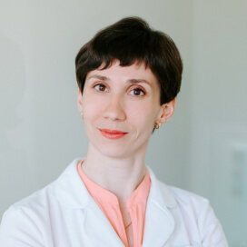
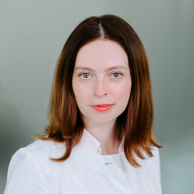
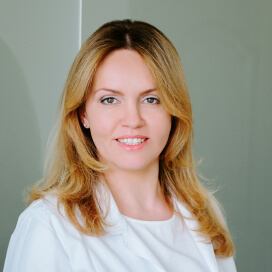
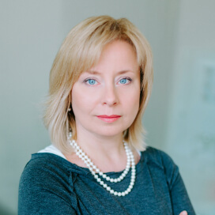
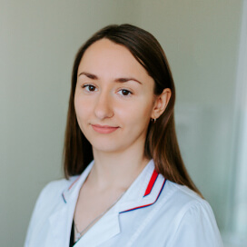

Приватна
офтальмологічна
практика
оптична когерентна томографія
Діагностика глаукоми
Офтальмологічне обстеження
Доктор медичних наук
Марія Знаменська
лікар-офтальмолог вищої категорії
Доктор медичних наук
Знаменська Марія Андріївна
лікар-офтальмолог вищої категорії
- 15 років стажу в офтальмології
- Більш 75.000 пацієнтів, з них більше 70.000 ОКТ-досліджень.
- Більше 300 прочитаних лекцій лікарям-офтальмологам.
- Понад 100 наукових робіт, в тому числі монографій і підручників.
- Більше 50 лікарів-офтальмологів пройшли у нас навчання та стажування на робочому місці.
Доктор медичних наук
Знаменська Марія Андріївна
лікар-офтальмолог вищої категорії
- Доктор медичних наук
- Лікар-офтальмолог вищої категорії
- Член Європейського товариства ретинологів
- Член Центрального формулярного комітету МОЗ України
- Експерт консультативно-експертної групи «Офтальмологія. Лікарські засоби» ДУ«Державний експертний центр МОЗ України»
- Провідний науковий співробітник ДУ «ІПАГ АМН України»
- Медичний директор компанії Altris.AI
Наша команда

Мартинова Марія Миколаївна
лікар-офтальмолог
проводить ОКТ- обстеження та консультує пацієнтів. Навчалася у Марії Андріївни. Вона уважна та відповідальна. В суперечливих та надскладних випадках результати ОКТ-сканування аналізуються в режимі реального часу разом із Марією Андріївною.

Гавриляк Ірина Василівна
лікар-офтальмолог
проводить первинні консультації та визначає необхідність та обсяг додаткових діагностичних обстежень та потребу в додаткових консультаціях. Має гарний досвід надання невідкладної офтальмологічної допомоги. Знаходе підхід до кожного пацієнта.

Жданова Оксана В'ячеславівна
лікар-офтальмолог
хірург з досвідом роботи більше 17 років. Вона консультує пацієнтів, яким може знадобитися хірургічне лікування з приводу катаракти, глаукоми та інших захворювань. Пацієнти поважають її професіональний підхід, людяність та легкість в спілкуванні.

Шпитяк Олександра
адміністратор
вона допоможе знайти зручний час для Вашого візиту. В залежності від проблеми, з якою Ви звертаєтесь, порадить, до кого з наших лікарів краще звернутися, надасть відповіді на всі запитання та зустріне Вас в день візиту.

Данильчук Олександра
медична сестра
допомагає нашим лікарям обстежувати Вас швидше. Самостійно виконує деякі прості офтальмологічні обстеження під наглядом лікарів.
Захворювання, з якими
звертаються пацієнти
Захворювання сітківки
Макулодистрофія, відшарування, макулярний розрив, діабетична
ретинопатія, тромбози центральної вени сітківки та ін.
Катаракта
Вікова катаракта, вторинна катаракта.
Запальні та алергічні захворювання очей
Блефарити, кон'юнктивіти, кератити, увеїти.
Глаукома
Сучасна рання діагностика і лікування глаукоми, динамічне
спостереження.
Аномалії рефракції
Короткозорість, далекозорість, астигматизм.
Захворювання зорового нерву
Неврити, атрофії та ін.
В яких випадках потрібна
оптична когерентна
томографія?
Оптична когерентна томографія сьогодні є золотим стандартом діагностики
більшості захворювань сітківки та зорового нерва. Останні 2 роки в світі успішно використовують
новий метод дослідження - ОКТ-ангіографію, яка дозволяє отримати пошарове зображення судин очного
дна без введення в організм пацієнта контрастних речовин. Завдяки цим дослідженням лікар-офтальмолог
може встановити правильний діагноз на ранніх стадіях. Проведення ОКТ в процесі лікування дозволяє
оцінити його ефективність.
Питання
та відповіді
Оптична когерентна томографія (ОКТ) - це сучасна безконтактна процедура дослідження структур очного дна (сітківки та зорового нерва) і переднього відділу ока (рогівка, райдужка, кут передньої камери). ОКТ дозволяє лікарю побачити найменші структурні порушення в тканинах очного яблука.
Процедура абсолютно безболісна, без контакту з оком.
Розширення зіниць не потрібно в більшості випадків.
Можна, однак є певні обмеження за віком. Дітям молодше 5 років часто не вдається виконати обстеження, оскільки вони непосидючі і їм складно зрозуміти як потрібно поводитися під час проведення ОКТ.
Сканування одного ока триває до 1 хвилини і залежить від кількості необхідних протоколів. Обробка, друк і опис результатів займає до 30 хвилин.
Консультація одного пацієнта займає в середньому 30 хвилин, проте в деяких випадках, в залежності від складності, може знадобитися більше часу.
Відгуки
Лікарям
Допомога
у встановленні діагнозів
друга думка.
у встановленні діагнозів
друга думка.
Якщо Вам потрібна наша допомога у
встановленні діагнозу або у виборі тактики
лікування – зв’яжіться з нами.
встановленні діагнозу або у виборі тактики
лікування – зв’яжіться з нами.
Ми проводимо
індивідуальні стажування
на робочому місці для
офтальмологів.
індивідуальні стажування
на робочому місці для
офтальмологів.
Як направити пацієнтів?
Завантажуйте бланк направлення тут
Контакти
Київ
ст. м. «Палац спорту»,
вул. Еспланадна, 20,
4 поверх, 403 кабінет